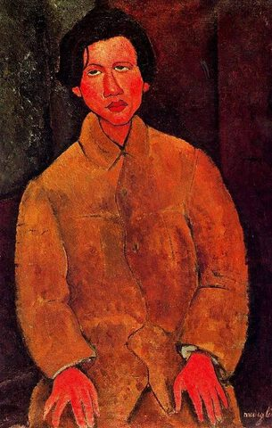

Amedeo Modigliani,1884 - 1920,Expressionism,Italian,"Amedeo Clemente Modigliani (Italian pronunciation: [ameˈdɛːo modiʎˈʎaːni]; 12 July 1884 – 24 January 1920) was an Italian Jewish painter and sculptor who worked mainly in France. He is known for portraits and nudes in a modern style characterized by elongation of faces, necks, and figures that were not received well during his lifetime but later found acceptance. Modigliani spent his youth in Italy, where he studied the art of antiquity and the Renaissance. In 1906 he moved to Paris, where he came into contact with such artists as Pablo Picasso and Constantin Brâncuși. By 1912 Modigliani was exhibiting highly stylized sculptures with Cubists of the Section d'Or group at the Salon d'Automne.",http://en.wikipedia.org/wiki/Amedeo_Modigliani,193
